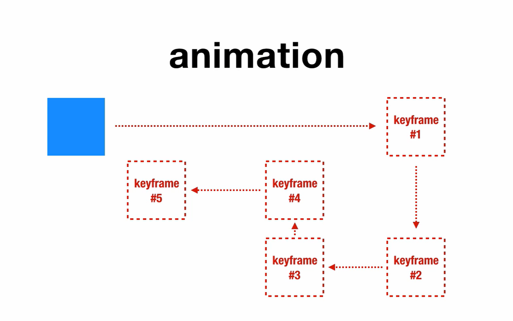

Animation
Animation tidak hanya memiliki keadaan awal dan akhir saja namun animation memiliki keyframe atau banyak keadaan sampai ke keadaan akhir.
Syntax Animation Property:
@keyframes [name] { from { [property-css] } to { [property-css] } }
Nilai-nilai yang dapat diberi pada property animation:
- name: nama dari animasi yang sama dengan keyframes(wajib ada).
- duration: sama fungsi dengan transition. Lihat link berikut utk lebih jelasnya: Transition.
- timing-function: sama fungsi dengan transition. Lihat link berikut utk lebih jelasnya: Transition.
- delay: sama fungsi dengan transition. Lihat link berikut utk lebih jelasnya: Transition.
- iteration-count: punya nilai angka yang artinya mau brp kali animationnya dan nilai infinite yang artinya diulang terus menerus. Untuk contoh klik ini.
- direction: punya nilai normal, reverse, alternate, dan alternate-reverse. Untuk contoh klik ini.
- fill-mode: memnentukan keadaan akhir punya nilai none, forwards, backwards, dan both. Untuk contoh klik ini.
- play-state: bisa terlihat apabila Menggunakan javascript, punya nilai stop dan running.
Contoh Penggunaan:
-
Menurut pakai atau tidaknya animation property.
-
Menggunakan fungsi keadaan persen(%).
-
Menggunakan nilai iteration-count.
-
Menggunakan nilai direction.
-
Menggunakan nilai fill-mode.